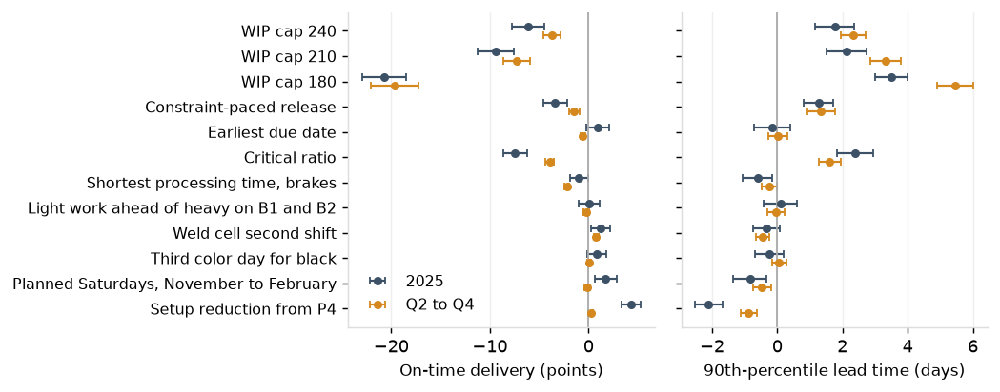

In Q2 to Q4 of 2025 the 90th-percentile lead time was 18.2 working days against an average quote of 12.4, with 90.1% on time.
The first quarter, carrying the 2024 year-end build, shipped 40.8% on time and took the year to 76.6%.
| Period | Measure | Measured | Model | Difference | Result |
|---|---|---|---|---|---|
| 2025 | Median lead time | 11.2 | 10.5 | -6.5% | within |
| 2025 | Mean WIP | 253 | 234 | -7.3% | within |
| 2025 | Brake utilization | 0.912 | 0.933 | +2.1 points | within |
| 2025 | Robotic weld utilization | 0.826 | 0.849 | +2.4 points | within |
| 2025 | On time | 76.6% | 81.8% | +5.1 points | outside |
| 2025 Q2 to Q4 | Median lead time | 9.2 | 9.0 | -2.2% | within |
| 2025 Q2 to Q4 | Mean WIP | 209 | 196 | -5.9% | within |
| 2025 Q2 to Q4 | Brake utilization | 0.908 | 0.921 | +1.2 points | within |
| 2025 Q2 to Q4 | Robotic weld utilization | 0.834 | 0.850 | +1.5 points | within |
| 2025 Q2 to Q4 | On time | 90.1% | 90.6% | +0.6 points | within |
95% of jobs shipped by the promised date in every quarter.

| Action | Owner | When |
|---|---|---|
| Setup program at the brakes: top 12 part-operations, operator assignment, shift handover (P4) | Brake supervisor, manufacturing engineering | May 2026 |
| Second shift on the robotic weld cell | Production manager | April 2026 |
| Planned Saturday brake shift every week, November through February | Plant manager | November 2026 |
Expected from the model, with 95% intervals: on-time delivery +6.6 points (+5.7 to +7.4) for the year and +1.2 points (+1.0 to +1.5) in Q2 to Q4; 90th-percentile lead time -3.3 days (-3.7 to -2.9) and -1.7 days (-1.9 to -1.5). The package does not reach the target on the promises as made; quoted lead times are P7.
Quarterly re-validation of the model against the actual lead time, WIP, utilization and on-time delivery. Saturday shifts and extended hours at the brakes reported monthly against the model's expected values.